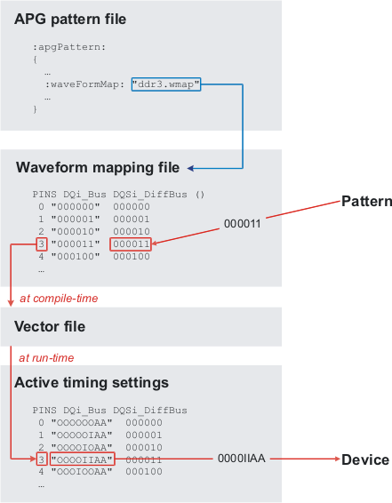

Setting up indirect waveform mapping
Much like direct waveform mapping, indirect waveform mapping converts the waveforms created by the compiler to indexes into the timing file that are added to the vector file. Instead of using the timing file, however, it uses a separate waveform mapping file.
About this task
Use indirect waveform mapping only if:
- If you are using the :devCyc: keyword in the Device access file (which we recommend that you avoid doing).
- If you need to map multiple logical waveforms to one physical waveform, for example, to use a third level.
In all other cases we recommend that you use Direct waveform mapping. If you use Transparent x-modes, you cannot use indirect waveform mapping.
Before you begin
Make sure your timing file is properly set up.
Procedure
Results
When the pattern is compiled, any logical waveforms created by the compiler are looked up in the appropriate PINS table of the waveform mapping file and replaced by the corresponding index (which is used at runtime to look up the corresponding vector from the wavetable), which is written to the vector file. At run time, this index is used to look up the correct waveform in the wavetable and send it to the device.
Example

What to do next
Set up Automatic waveform generation, if required, or compile the pattern.
Functional changes
- Introduced before SmarTest 6.3.2